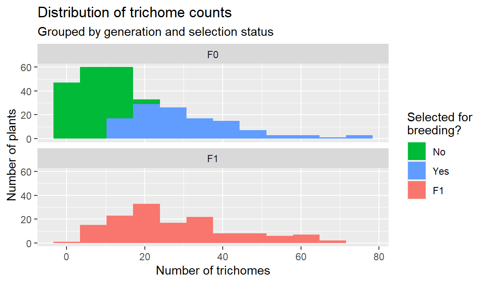

Data Lab 2
In this lab you will apply what you learned in Data Lab 1 to analyze the fast plant data generated by the class this semester.
Remember, the question you are trying to answer is:
Does the number of trichomes on Fast Plants (Brassica rapa) plants vary between the F0 (parent) and F1 (offspring) generations.
The results of this assignment will form the RESULTS section of your Fast Plant Lab Report.
Fast plant data
You can download the fast plant data here:
Each row in the dataset represents an individual plant.
The variables in the dataset are:
- generation. The generation the plant belonged to? (values include
"F0"or"F1") - trichome_number. The number of trichomes the plant had. (values are numeric integers)
- selected. For the F0 generation, was the individual plant selected for breeding? (values include,
"yes","no", orNAif the plant was from the F1 generation) - seed_source For the F1 generation, was the plant from the current year or a previous year (values include
"current_year","previous_year", orNAif the plant was from the F0 generation).
Your assignment
Your object in this lab is to generate the results that will answer this question, specifically:
- A histogram showing how the distribution of numbers of trichomes varied between generations
- A bar chart showing how the mean number of trichomes varied between generations. Include a 95% confidence interval around the means.
- Figure legends describing these two figures.
- A paragraph describing the results of the analysis, including the results of a t-test to test for a difference between the means.
To answer the question, you should:
- Create a new RStudio project.
- Copy the code from the Data Lab 1 beak length script → [click link] and paste it into a new script.
- Modify the script to use the fast plant data
"fastplant_data.xlsx". - Plot a histogram for each generation (F0 and F1) but color the histogram based on whether the plants were selected for breeding or not. For help, see A new variation below.
For a reminder on how to perform the analysis steps, see Data Lab 1, Part 4. Bluestem Data Assignment →
When you are finished, paste your figures into a Word document, add figure legends and a Results paragraph, and upload it to the D2L assignment “Data Lab 2”.
A new variation
In the finch and bluestem analyses, you created a histogram for each group and also colored the histograms differently for each group.
In theory, there is no reason you can’t use a different variable to color the histograms.
For example, here is the finch data colored by sex:
# histogram of beak length, grouped by survival, colored by sex
ggplot(
data = finches,
mapping = aes(x = beak_length,
fill = sex) # color the boxes by gender
) +
geom_histogram(bins = 14) +
facet_wrap(~ outcome, ncol = 1) + # put each outcome in its own panel
labs(
title = "Distribution of beak lengths",
subtitle = "Grouped by bird sex and survival outcome",
x = "Beak Length (mm)",
y = "Number of Birds"
)
For your current assignment, put each generation of plants on its own panel, and color the columns by whether the plants were selected for breeding or not.
For example:
read_excel("fastplant_data.xlsx") %>%
ggplot(aes(trichome_number)) +
geom_histogram(aes(fill = selected), bins = 12) +
facet_wrap(~ generation, ncol = 1) +
labs(
title = "Distribution of trichome counts",
subtitle = "Grouped by generation and selection",
x = "Number of trichomes",
y = "Number of plants"
)